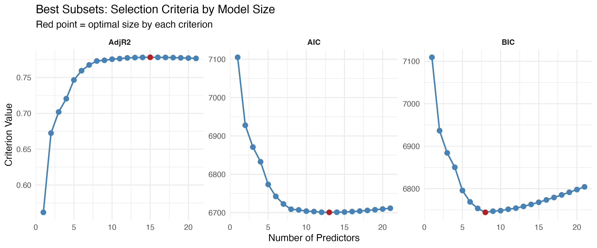
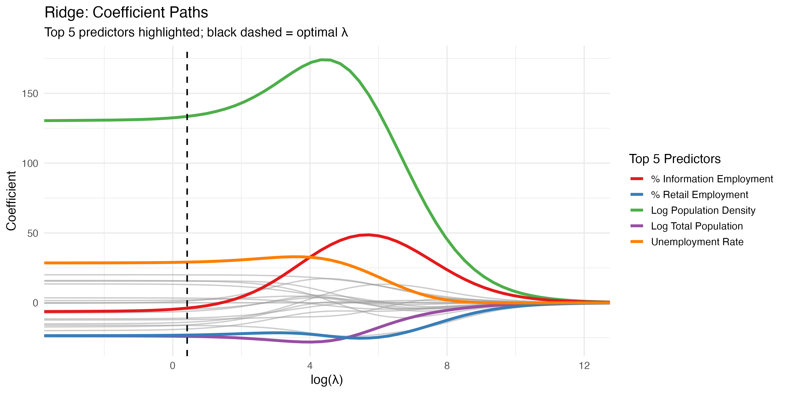
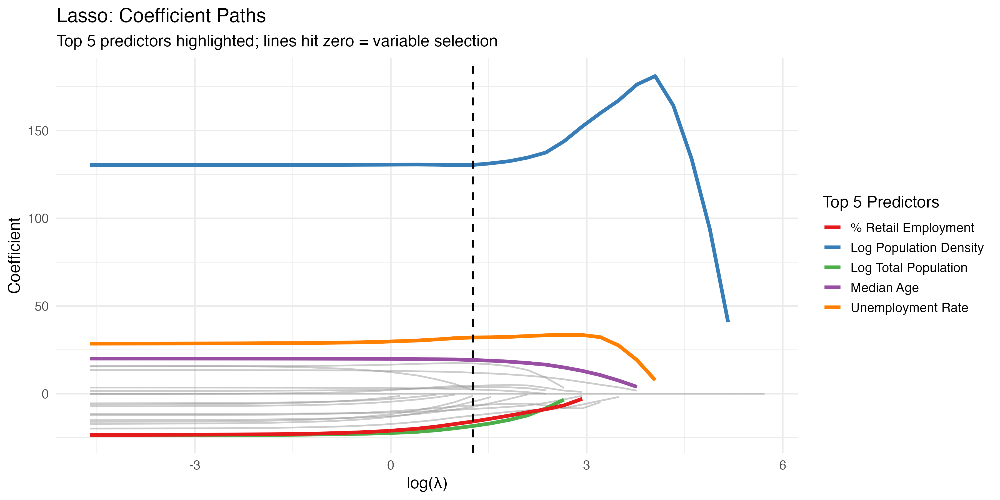
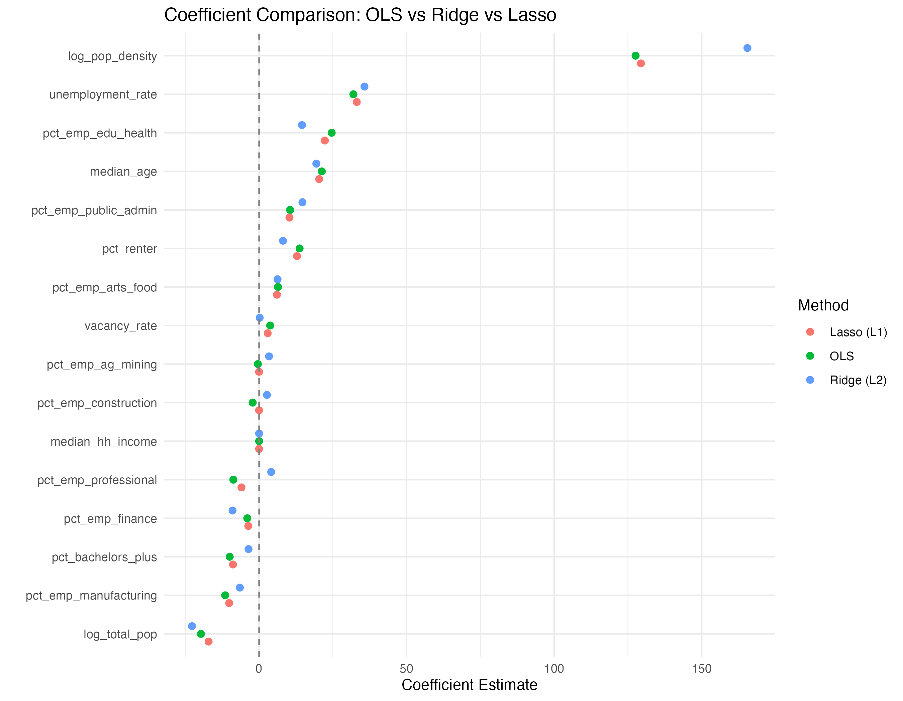

Model Selection and Regularization¶
Overview¶
When a multiple-regression model has more than a handful of candidate predictors, "just throw them all in" stops being a good answer. Some predictors are noise, some are near-duplicates of each other, and a model that fits the training data beautifully can still predict badly out of sample. Model selection (best subsets, stepwise) and regularization (Ridge, LASSO, Elastic Net) are the two families of tools for deciding which predictors to keep and how much to trust each one.
This page is the book's R-language treatment of both, grounded in a graduate regression project (STAT 654, Texas A&M) where I modeled U.S. city median rent from Census demographics. It picks up where Multiple Linear Regression and Assumptions & Diagnostics leave off — the full OLS model there is the baseline every method on this page tries to beat.
The setup: rent vs. demographics¶
The data merges Apartment List
median-rent estimates with American Community Survey (ACS) 5-year demographics via
tidycensus — 613 U.S. cities, one row each, cross-sectional. The response is
price_overall (median rent in dollars). The predictors are things like median household
income, share of adults with a bachelor's degree, population density (logged), vacancy
rate, and a family of industry employment shares (pct_emp_professional,
pct_emp_manufacturing, …). With that many overlapping socioeconomic measures in one
model, multicollinearity is the first thing to check — though where it actually showed up
surprised me (see the Gotchas).
The full OLS model with everything in it — 21 predictors after log-transforming the two population variables — is the thing to beat:
library(tidyverse)
df_model <- df %>%
mutate(log_pop_density = log(pop_density),
log_total_pop = log(total_pop)) %>%
select(price_overall,
log_pop_density, log_total_pop,
median_hh_income, median_age, pct_bachelors_plus,
pct_renter, vacancy_rate, unemployment_rate,
starts_with("pct_emp_")) %>%
drop_na()
fit_full <- lm(price_overall ~ ., data = df_model) # 21 predictors, the baseline
summary(fit_full)
Source: ~/Projects/school/tamu-grad/stat654/regression_no_states.Rmd
Before selecting anything, it's worth checking why selection is even needed here. Running
car::vif() on this 21-predictor model flags a correlated socioeconomic cluster — the
bachelor's-degree share (VIF ≈ 8.4), median household income (≈ 6.1), and the
professional-employment share (≈ 6.1) all track each other across cities. Nothing crosses
the classic VIF > 10 line in this spec (my earlier 65-predictor version with state dummies
did), but that shared signal is exactly what best-subsets and the L1/L2 penalties are built
to arbitrate. (The VIF diagnosis is written up on the
Assumptions page.)
Best subsets selection¶
Best-subsets selection is the brute-force ideal: for each model size \(k\), find the single
best combination of \(k\) predictors, then compare the winners across sizes using a
criterion that penalizes complexity. R's leaps package does the search efficiently.
library(leaps)
# regsubsets does the exhaustive search and returns RSS, adjr2, cp, bic per size
rs <- regsubsets(price_overall ~ ., data = df_model, nvmax = ncol(df_model) - 1)
rs_summary <- summary(rs)
n <- nrow(df_model)
ks <- 1:length(rs_summary$rss)
# leaps reports BIC but not AIC directly — reconstruct both from RSS
aic_values <- n * log(rs_summary$rss / n) + 2 * ks
bic_values <- n * log(rs_summary$rss / n) + ks * log(n)
best_aic_size <- which.min(aic_values) # 13 predictors
best_bic_size <- which.min(bic_values) # 8 predictors
best_adjr2_size <- which.max(rs_summary$adjr2) # 15 predictors
Source: ~/Projects/school/tamu-grad/stat654/stepwise.Rmd
The three criteria disagree, and that disagreement is the whole point:

- BIC is the strictest — its \(k\log n\) penalty grows with sample size, so it landed on a lean 8-predictor model.
- AIC (equivalently Mallows' \(C_p\)) uses a flat \(2k\) penalty and kept 13.
- Adjusted \(R^2\) penalizes complexity the least and kept 15.
There is no single "right" answer; BIC optimizes for the true model under strong assumptions, AIC optimizes for predictive accuracy, and adjusted \(R^2\) is the most permissive. I carried all three forward to the out-of-sample bake-off rather than picking a favorite on faith.
Stepwise selection (and its pitfalls)¶
Exhaustive best-subsets becomes infeasible once you have many predictors (it's \(2^p\)
models). Stepwise selection is the greedy shortcut: start somewhere and add or drop one
predictor at a time by AIC until nothing improves. step() does bidirectional search:
fit_null <- lm(price_overall ~ 1, data = df_model) # intercept only
fit_step <- step(fit_full,
scope = list(lower = fit_null, upper = fit_full),
direction = "both", # can add AND remove at each step
trace = 1)
# which predictors survived, and which got dropped
dropped <- setdiff(names(coef(fit_full)), names(coef(fit_step)))
Source: ~/Projects/school/tamu-grad/stat654/regression_no_states.Rmd
Stepwise is convenient and it landed near the best-subsets AIC pick, but it comes with real statistical baggage that's easy to forget once you see a clean final model:
- The p-values lie. Every coefficient's p-value and confidence interval is computed as if the model had been chosen in advance. After you let the data pick the predictors, those inferential numbers are optimistically biased — the reported significance is not honest significance.
- It's greedy, not global. Bidirectional stepping can walk right past the true best subset because it only ever looks one variable ahead.
- It's unstable. Small changes in the data (or which direction you start from) can flip which variables survive, especially when predictors are correlated — which, thanks to those employment shares, they very much were here.
The practical takeaway I settled on: use stepwise/best-subsets to generate candidate models, then judge them by cross-validated error, never by the in-sample p-values the selection produced.
Regularization: Ridge and LASSO¶
Regularization takes a different route. Instead of a hard keep/drop decision, it fits all
the predictors but adds a penalty on the size of the coefficients, shrinking them toward
zero. glmnet fits both flavors; the alpha argument switches between them.
Ridge (L2) minimizes
and LASSO (L1) minimizes
The one-word difference — squared vs. absolute — is why Ridge shrinks coefficients but
never zeroes them, while LASSO can drive them exactly to zero and thus does variable
selection for free. Elastic Net (0 < alpha < 1) blends the two penalties, which is
useful when correlated predictors would otherwise make LASSO pick one arbitrarily.
glmnet needs a numeric design matrix rather than a formula, and the penalty strength
\(\lambda\) is chosen by cross-validation:
library(glmnet)
X <- model.matrix(price_overall ~ ., data = df_model)[, -1] # drop intercept column
y <- df_model$price_overall
set.seed(654)
cv_ridge <- cv.glmnet(X, y, alpha = 0, nfolds = 10) # alpha = 0 -> Ridge (L2)
cv_lasso <- cv.glmnet(X, y, alpha = 1, nfolds = 10) # alpha = 1 -> LASSO (L1)
# two lambdas worth knowing:
cv_lasso$lambda.min # minimizes CV error
cv_lasso$lambda.1se # simplest model within 1 SE of the minimum (more regularized)
Source: ~/Projects/school/tamu-grad/stat654/lass0_ridge.Rmd
One thing the code above quietly relies on: glmnet standardizes the predictors internally
by default (standardize = TRUE) and reports coefficients back on the original scale.
That matters because the L1/L2 penalties are scale-sensitive — penalizing raw dollars and
raw percentages equally would be meaningless — so if you ever turn that default off, you
must standardize X yourself first.
cv.glmnet returns two \(\lambda\) values, and the choice between them is a genuine modeling
decision: lambda.min gives the lowest cross-validation error, while lambda.1se is the
most-regularized model whose error is still within one standard error of that minimum — a
deliberately simpler, more conservative pick.
Reading the coefficient paths¶
The most informative plot in the whole analysis is the coefficient path — every coefficient traced as \(\lambda\) sweeps from small (barely penalized, ≈ OLS on the right of the plot) to large (everything crushed toward zero on the left).
Ridge shrinks smoothly and keeps every predictor alive:

LASSO, by contrast, snaps coefficients to exactly zero one after another as the penalty grows — you can literally watch variables leave the model:

# Ridge paths, tidied with broom for a ggplot version
library(broom)
fit_ridge_path <- glmnet(X, y, alpha = 0, lambda = grid)
ridge_tidy <- tidy(fit_ridge_path) %>% filter(term != "(Intercept)")
# LASSO paths
fit_lasso_path <- glmnet(X, y, alpha = 1, lambda = grid)
lasso_tidy <- tidy(fit_lasso_path) %>% filter(term != "(Intercept)")
Source: ~/Projects/school/tamu-grad/stat654/lass0_ridge.Rmd
At the CV-optimal \(\lambda\), LASSO kept 18 of the 21 predictors, zeroing out a few of the weakest employment shares — and reassuringly, the ones it dropped overlapped heavily with the ones stepwise AIC dropped. Ridge, as advertised, kept all 21 but shrank the shakiest coefficients hardest.
Seeing the three methods side by side¶
Plotting OLS, Ridge, and LASSO coefficients together makes the mechanism obvious: Ridge pulls the OLS estimates gently inward, LASSO pulls harder and parks several exactly on zero.

Source: ~/Projects/school/tamu-grad/stat654/regularization.Rmd — note this figure comes
from a companion run on a slimmer 16-predictor version of the model (8 employment
categories, different seed), so the row count differs from the 21-predictor tables above;
the shrinkage geometry it shows is the point, not the exact rows.
Which model actually won?¶
Every candidate was scored the same honest way — 10-fold cross-validated RMSE — so they're comparable regardless of how many predictors each carries:
library(caret)
set.seed(654)
ctrl <- trainControl(method = "cv", number = 10)
# each candidate refit inside train() with method = "lm" / "lmStepAIC" / glmnet
| Model | Predictors | CV RMSE ($) |
|---|---|---|
| Full OLS | 21 | 239.84 |
| Ridge (L2) | 21 | 241.96 |
| LASSO (L1) | 18 | 241.48 |
| Best subsets — BIC | 8 | 238.36 |
| Best subsets — Adj \(R^2\) | 15 | 237.54 |
| Best subsets — AIC | 13 | 235.72 |
| Hand-picked (6 vars) | 6 | 245.32 |
Source: ~/Projects/school/tamu-grad/stat654/lass0_ridge.Rmd
The winner was the AIC-selected 13-predictor model — but look at the spread: every method landed within about \(10 of every other on a ~\)1,400 median rent. That flatness is the finding. With n ≈ 600 and only ~20 predictors, this problem sits comfortably in the regime where ordinary least squares is already well-behaved, so regularization mostly validated the OLS story rather than improving it. Ridge and LASSO earn their keep when \(p\) is large relative to \(n\) (or when predictors are wildly collinear); here they served as a cross-check that confirmed the same handful of demographic drivers — income, education, density — carry the signal.
Gotchas¶
glmnetwants a matrix,lmwants a formula. The most common first error is passing a data frame or formula tocv.glmnet. Build the design matrix withmodel.matrix(y ~ ., data)[, -1](the-1drops the intercept columnglmnetadds back itself) and passXandyseparately.- Post-selection p-values are not real p-values. After stepwise or best-subsets picks
the model, the
summary()significance stars are optimistically biased because the same data chose the predictors and tested them. Report them as descriptive at best; judge models by cross-validated error instead. - Verify your data dictionary against the data. My own data dictionary said the
employment shares were "mutually exclusive and sum to ~100%" — which would make them
nearly linearly dependent by construction. They actually sum to ~52% (the ACS table slice
I pulled is partial), so the structural collinearity I designed around wasn't there; the
collinearity that mattered was the education–income–professional cluster instead. One
rowSums()sanity check would have caught the false premise before it shaped the analysis. lambda.minvs.lambda.1seis a real choice.lambda.minchases the lowest CV error;lambda.1sedeliberately trades a hair of accuracy for a simpler, more stable model. Decide which you want before looking at the coefficients, not after.- Set the seed before
cv.glmnet. The fold assignments are random, so the chosen \(\lambda\) (and therefore the final coefficients) will drift run-to-run withoutset.seed(). Reproducibility here isn't optional — a companion run of these same models with a different seed moved Ridge's CV RMSE by about $11, so differences of a few dollars in the table above are fold-assignment noise, not real rankings. - Regularization is not a free accuracy boost. With a comfortable \(n/p\) ratio it will often tie or slightly lose to plain OLS, as it did here. That's not a failure — it's evidence your OLS model wasn't overfit in the first place.